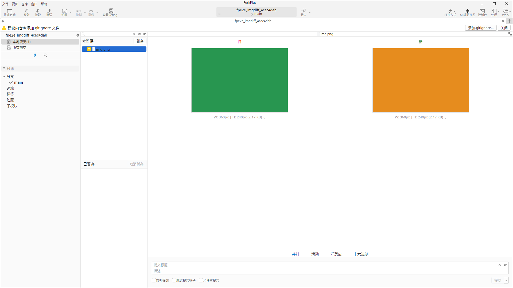
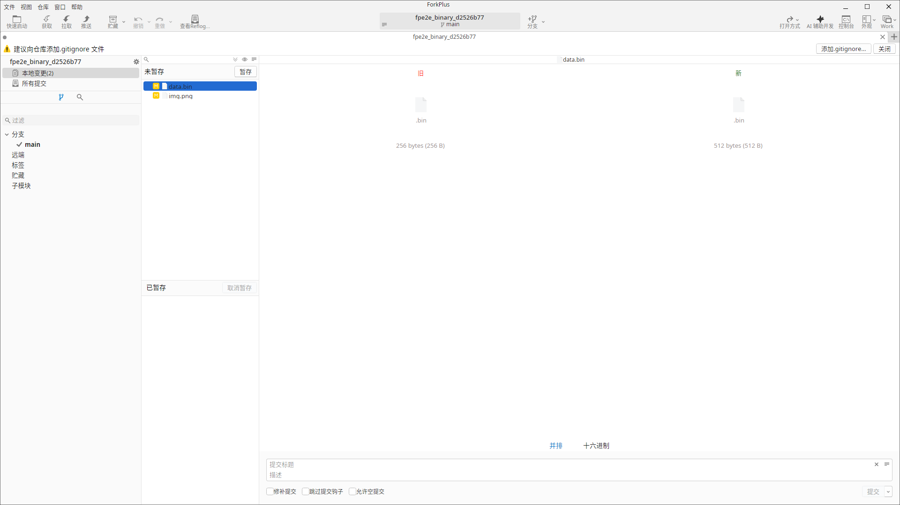
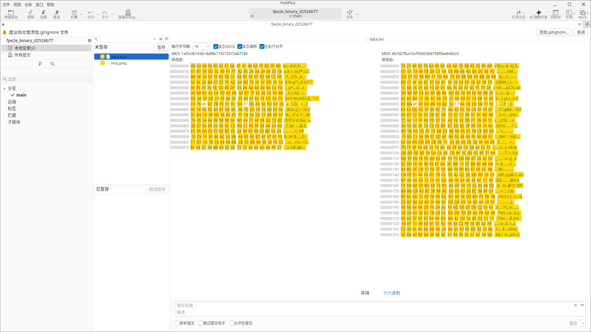

从 v5.0.0 起，ForkPlus 把「对比视图」重构为插件化架构：原先写死在主程序里的图片对比与 Hex 对比拆分为两个独立的插件 DLL，由主程序在启动时从 plugins/ 目录动态加载。这样一来，不重新编译主程序即可增删对比视图插件，第三方也能以插件形式为新的文件类型提供专属对比视图。v5.0.1 起，偏好设置新增「插件」管理页——可查看插件名称、版本号与描述，启用/禁用插件，并重新加载插件（无需重启）；v5.0.3 起该页进一步支持压缩包安装与批量卸载，插件名称与描述也会跟随界面语言本地化。从 v5.1.0 起架构再次升级：每个插件独占一个目录 plugins/<程序集名>/，目录根带 plugin.json 清单，宿主只安装 / 加载声明了最低支持主软件版本（minHostVersion）且与当前主程序兼容的插件，每个插件由独立加载上下文加载以隔离依赖；内置插件同样可以卸载。本章说明插件的目录与清单规范、如何认领与路由文件、如何在偏好设置里管理与安装卸载，以及内置插件的行为。
为什么插件化
- 可扩展：为新的文件类型（如某种领域格式）提供专属对比视图时，只需新写一个插件 DLL，无需改动主程序。
- 可替换 / 可覆盖：任何内置对比视图都能被更高优先级的插件或用户绑定覆盖。
- 按需加载：主程序启动时扫描
plugins/下的插件子目录，读取各自的plugin.json清单后按需加载，随读随用。 - 依赖隔离：每个插件由独立加载上下文加载，私有依赖与原生库随目录分发——两个插件各带一份不同版本的同一依赖也互不打架；卸载时整目录删除，不留残留。
- 行为不变：内置插件的对比行为与 v4.3.2 保持一致——图片走图片对比器，其余二进制走 Hex 对比器。
内置插件
ForkPlus 自带两个内置对比视图插件，覆盖了绝大多数场景：
| 插件 ID | 名称 / 版本 | 最低支持主程序 | 认领范围 | 说明 |
|---|---|---|---|---|
forkplus.image |
图片对比1.0.0 |
5.1.0 |
精确扩展名：.bmp .gif .png .jpg .jpeg .ico .tga .webp |
图片对比插件：并排 / 滑动 / 洋葱皮 / Hex 四种模式，含动图播放、像素差异高亮、缩放平移与 LFS smudge；优先级 100。 |
forkplus.hex |
十六进制对比1.0.0 |
5.1.0 |
通配兜底：任何未被专属插件认领的文件类型 | Hex 对比插件：默认 side-by-side 文件卡片（图标 + 扩展名 + 大小 + LFS 徽章）；宿主预载字节（v5.0.5 起 ≤100MB）时可切换到 Hex 对比。 |
插件目录与清单（plugin.json）
从 v5.1.0 起，每个插件在 plugins/ 下独占一个以程序集名命名的子目录，插件的 DLL、私有依赖、原生库与清单都放在其中，互不干扰：
plugins/
├── ForkPlus.Plugins.Image/
│ ├── plugin.json
│ └── ForkPlus.Plugins.Image.dll
└── ForkPlus.Plugins.Hex/
├── plugin.json
└── ForkPlus.Plugins.Hex.dll
目录根的 plugin.json 是宿主判定「这是不是一个可安装 / 可加载的插件」以及「是否与当前主程序兼容」的唯一事实来源，固定 5 个字段：
| 字段 | 示例 | 类型 | 说明 |
|---|---|---|---|
schemaVersion | 1 | 整数 | 清单格式版本。 |
id | forkplus.image | 字符串 | 插件唯一标识。 |
version | 1.0.0 | 字符串 | 插件自身版本。 |
minHostVersion | 5.1.0 | 字符串 | 最低支持的主程序版本：主程序版本低于该值即判定为不兼容。 |
assembly | ForkPlus.Plugins.Image.dll | 字符串 | 插件主程序集文件名（相对插件目录根）。 |
minHostVersion、或主程序版本低于该值，一律不安装 / 不加载，并在偏好设置页单独列出原因。minHostVersion 应与插件代码中 IPluginMetadata.MinHostVersion 保持一致——宿主以清单为准。图片对比插件（forkplus.image）
图片对比插件提供第 7 章介绍的四种对比模式，为图片与动图提供图形化差异视图。

forkplus.image）：并排模式对比新旧两版图片Hex 对比插件（forkplus.hex）
Hex 对比插件是所有二进制的兜底视图。未安装该插件时，ForkPlus 同样会显示文件卡片视图。

forkplus.hex）：文件卡片视图（图标 + 字节大小，此例 256 B → 512 B）
插件路由规则
一个文件该交给哪个插件渲染，由 DiffViewPluginRegistry 按下面的优先级决定：
- 用户绑定：用户显式把某个扩展名绑定到指定插件（
BindExtension）时优先采用。 - 精确扩展名：插件声明的扩展名表命中时采用（如
.png→ 图片对比插件）。 - 通配兜底：以上都不命中时，交给声明为通配兜底的 Hex 对比插件。
文本差异的插件接管（v5.0.5）
上述优先级对二进制与文本差异都适用，但「无人认领」时的默认行为不同：
- 二进制差异：未命中用户绑定 / 精确扩展名时，落到通配兜底的 Hex 对比插件。
- 文本差异：默认仍由内置文本编辑器渲染；只有当用户显式绑定该扩展名、或插件以精确扩展名声明认领（如
.json→ 结构化对比、.dbc→ DBC 对比、.cer→ 证书对比）时才改由插件接管。
这意味着：为某类文本文件（如 .json / .dbc）启用专属插件视图，只需安装一个声明了该扩展名的插件即可——无需修改仓库的 .gitattributes，也不会影响其它文本文件（它们照旧走内置文本编辑器）。
DiffViewPluginRegistry.ResolveClaimed 解析，只认「用户绑定 > 精确扩展名」，不含 * 通配兜底——否则 Hex 兜底插件会把所有未被专属插件认领的文本文件从内置文本视图抢走。插件契约与宿主桥接
插件通过独立的契约工程 ForkPlus.Plugins.Abstractions 与主程序对接，其中定义了 IDiffViewPlugin、IDiffView、IDiffViewHost、DiffViewContext 等类型。插件本身不感知 Git 领域类型与主工程；一切宿主能力都经 PluginEnvironment / IDiffViewHost 桥接注入，包括：
- 本地化：按当前界面语言取文案；
- 设置：读取用户偏好；
- 剪贴板：复制内容；
- LFS smudge：还原 LFS 指针为真实内容；
- 保存对话框：导出视图内容；
- 文件图标：按扩展名取图标。
内置的图片插件与 Hex 插件共用一层共享组件（ForkPlus.Plugins.Ui）：文件卡片面板（BinaryContentPanel）、回退面板（DiffFallbackPanel）、Hex 编辑内核（HexDiffUserControl / HexEditor）、动图播放组件等不再复制两份代码，而是由两个插件共同引用。自 v5.1.1 起，该共享组件还向插件提供并排双 WebView 预览控件（SideBySideHtmlPreview）与 HTML 资源内联工具（HtmlResourceInliner）——需要渲染 HTML 页面的插件（如 CHM / EPUB 的「预览」模式）可直接复用，无需各自实现。
插件管理器（偏好设置 → 插件）
从 v5.0.1 起，可在「偏好设置 → 插件」页集中管理对比视图插件，无需手工改文件、也无需重启：
- 查看插件信息：每个插件展示名称、插件版本、最低支持主软件版本与描述，以及它认领的匹配扩展名与优先级；加载失败或不兼容的插件会单独列出并标明原因（如「需要主程序 ≥ 5.1.0」），不影响其他插件。
- 搜索过滤（v5.2.2）：页面顶部的搜索框可按插件名称、插件描述或匹配扩展名过滤插件列表（不区分大小写的子串匹配，扩展名带不带点均可，如
.png/png）。搜索词会保留——启用/禁用、卸载、重新加载后列表仍按当前搜索词过滤；过滤后无匹配时显示空态提示。 - 启用 / 禁用：用每行的开关即时启用或禁用插件。禁用只把插件排除出对比路由，插件条目与元数据仍保留，可随时重新启用；禁用状态会持久化，下次启动沿用。
- 重新加载插件：点击「重新加载插件」按钮，ForkPlus 会重建插件注册表并重新扫描
plugins/下各插件子目录——放入或删除插件后立即生效，无需重启；用户绑定与禁用状态跨重载保持。 - 安装插件：点击「安装插件...」选择从发布页下载的插件压缩包（合集包或单插件包均可），ForkPlus 会自动识别包内各插件目录、逐个校验
plugin.json兼容性后安装到plugins/<程序集名>/并重新加载——无需手工解压；不兼容或缺少清单的插件会被跳过并提示。 - 卸载插件：勾选要移除的插件后点击「卸载选中」可一次卸载多个（也可用「全选」快速勾选）。卸载会删除插件整个目录（含清单、私有依赖与原生库），不留残留；自 v5.1.0 起内置的图片对比与 Hex 对比插件同样可卸载，卸载后可从插件仓下载对应单插件包重装。若文件被占用，会在下次启动 ForkPlus 时自动完成删除。
- 打开插件目录：点击「打开插件目录」直接定位到
plugins/，方便投放或替换插件 DLL。 - 下载最新插件（v5.0.2）：点击页内的「下载最新插件」超链接，直达 ForkPlus-Plugins 的 Releases 页面，一键获取最新插件。
IPluginMetadata 契约提供；未实现该接口的插件会回退显示为「显示名 + 程序集版本 + 空描述」，不会因此无法加载。而插件版本与最低支持主软件版本两列取自目录内的 plugin.json 清单（见上文），与代码里的 IPluginMetadata 相互独立。安装第三方插件
- 到 ForkPlus-Plugins 的 Releases 页面下载最新插件（偏好设置 → 插件页的「下载最新插件」超链接可直达）。
- 推荐直接用偏好设置 → 插件页的「安装插件...」选择下载好的插件 zip，ForkPlus 会自动识别包内插件目录、校验兼容性后安装到
plugins/<程序集名>/并重新加载；也可手工把整个插件目录（含plugin.json与 DLL）放进程序的plugins/目录下（可在偏好设置 → 插件页点「打开插件目录」定位）。 - 安装后即已加载；若为手工投放，在「偏好设置 → 插件」页点击「重新加载插件」即可立即生效，无需重启 ForkPlus（
DiffViewPluginLoader会重扫描各插件子目录）。 - 如插件声明的扩展名与内置插件冲突，可让插件声明更高优先级，或把扩展名绑定到该插件来指定使用。
- 不再需要某个插件时，在「偏好设置 → 插件」页勾选它并点击「卸载选中」删除（自 v5.1.0 起内置插件同样可卸载）。
ForkPlus.Plugins.Abstractions 为唯一依赖，不要直接引用主工程——所有需要的能力都从 IDiffViewHost 获取，这样插件才能独立分发、独立升级。发布时请附带 plugin.json 并把 minHostVersion 设为插件实际要求的最低主程序版本（本仓 1.2.0 的插件统一为 5.1.0）。从旧版本升级（v5.1.0 兼容性）
v5.1.0 把插件布局从「DLL 平铺在 plugins/ 根目录」改为「每个插件独占子目录 + plugin.json 清单」。因此升级后旧版（≤ 5.0.7）插件不再兼容：
- 首次启动检测到
plugins/根目录存在旧版平铺的*.dll时，ForkPlus 会清空该目录并弹窗告知需要重新安装插件。 - 请前往 ForkPlus-Plugins Releases 下载 1.2.0 的插件包——合集包（
ForkPlus-Plugins-1.2.0-<平台>.zip，含全部插件）或单插件包（ForkPlus-Plugins-<名称>-1.0.0-<平台>.zip），在偏好设置 → 插件页用「安装插件...」安装。 - 旧版残留的「待删 DLL」记录会在下次启动时按新逻辑清理；
plugins/下不再有平铺 DLL 后，本检测天然幂等、不会再次触发。
minHostVersion，插件仍会被跳过（不加载），并在偏好设置页标注为不兼容——升级插件前请先确认主程序版本。与旧版行为的一致性
插件化属于内部架构重构，默认对比行为与 v4.3.2 完全一致：
- 图片文件 → 图片对比插件（四模式、动图播放、缩放平移、LFS smudge）；
- 其余二进制 → Hex 对比插件（文件卡片，预载字节时可切 Hex 对比）；
- 未安装 Hex 插件时，同样显示文件卡片视图作为回退。
关于各模式的详细操作，请参见 第 7 章 · 二进制与图片 Diff。